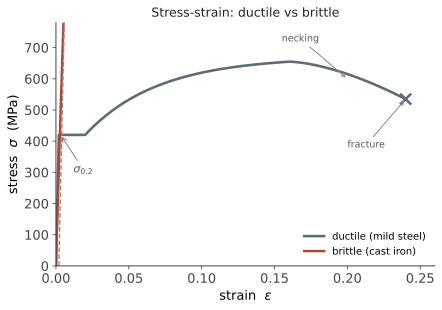

力学 II · 应力、应变与材料行为
层次：本科核心。 上一页算的是"力有多大"，本页问"材料受得住吗"。答案需要两步：把力转成应力（单位面积上的力），把变形转成应变（单位长度的变形），再用材料的本构关系把两者连起来。这三个概念是全部固体力学的语言。
一、应力：为什么需要它
同样 1000 N 的拉力，作用在 \(\phi\)1 mm 的丝上会拉断，作用在 \(\phi\)50 mm 的杆上毫无影响。决定材料命运的不是力，是应力：
单位：Pa = N/m²，工程上常用 MPa = N/mm²（这个换算很方便：牛顿除以平方毫米直接得 MPa）。
应力是张量，不是矢量。一点的应力状态需要 6 个独立分量（三维）描述：
为什么必须是张量：同一点上，不同方向的截面承受的应力不同。所以"这一点的应力是多少"这个问题不完整——必须问"哪个方向的截面上"。
二、主应力与 Mohr 圆
既然应力随截面方向变化，自然要问：哪个方向最危险？
主应力：存在三个互相垂直的方向，其截面上只有正应力、没有切应力。这些正应力 \(\sigma_1 \ge \sigma_2 \ge \sigma_3\) 就是主应力——它们是应力张量的特征值（🔗 数学站线性代数：这就是实对称矩阵的谱分解，主方向即特征向量）。
最大切应力出现在与主方向成 45° 的面上：
Mohr 圆把这一切画成一个圆——它是应力状态变换的几何表示，至今是工程师快速判断的利器。
一个直接的实验印证：拉伸低碳钢试样时，滑移带（吕德斯带）出现在与轴线成 45° 的方向，正是最大切应力面。这说明塑性变形由切应力驱动——这个观察直接引出下面的屈服准则。
三、应变与本构关系
应变度量变形：
胡克定律（线弹性、各向同性）：
三个常数只有两个独立：
典型值（要有量级感）：
| 材料 | \(E\) (GPa) | \(\nu\) | 密度 (g/cm³) |
|---|---|---|---|
| 钢 | ~210 | 0.30 | 7.85 |
| 铝合金 | ~70 | 0.33 | 2.70 |
| 钛合金 | ~110 | 0.34 | 4.5 |
| 铸铁 | 100–170 | 0.25 | 7.2 |
| 工程塑料 | 1–4 | ~0.4 | ~1.2 |
| 碳纤维复合（纵向） | 100–200 | — | ~1.6 |
一个极重要的工程事实：钢与铝的比刚度（\(E/\rho\)）几乎相同（约 27 vs 26 GPa·cm³/g）。所以用铝替代钢并不能在同等重量下获得更高刚度——铝的优势在于同等强度下更轻、以及成形与耐蚀性。"换轻材料就能减重"是一个需要具体分析的直觉，取决于设计受强度控制还是受刚度控制。
泊松比的含义：拉伸时横向收缩。\(\nu=0.5\) 意味着体积不变（橡胶接近）；金属约 0.3。存在 \(\nu<0\) 的超构材料（拉伸时横向也膨胀），是第二十二页的话题。
四、拉伸曲线：材料的身份证

关键点： - 比例极限 / 弹性极限：卸载后能完全恢复； - 屈服强度 \(\sigma_s\)（或 \(\sigma_{0.2}\)）：开始明显塑性变形。这是多数静强度设计的判据； - 抗拉强度 \(\sigma_b\)：工程应力的最大值。注意它对应颈缩开始，而非真正的材料强度上限； - 延伸率与断面收缩率：延性指标。
工程应力 vs 真应力：工程应力用原始截面积，真应力用瞬时截面积。颈缩后工程应力下降，但真应力仍在上升——材料并没有变弱，只是截面变小了。这个区别在成形工艺分析中至关重要（第十七页）。
五、屈服准则：什么时候开始塑性变形
单向拉伸时判据很简单（\(\sigma > \sigma_s\)）。但复杂应力状态下呢？ 需要把多维应力状态折算成一个等效值。
von Mises 准则（畸变能理论）——延性金属的标准判据：
物理含义：屈服由畸变能（改变形状的能量）控制，而非体积改变能。
一个有力的实验证据：静水压力（三向等压）下金属几乎不屈服——深海压力可以极大，材料却只是被均匀压缩。因为静水压力只改变体积、不改变形状，\(\sigma_{eq}=0\)。这直接支持了畸变能理论。
Tresca 准则（最大切应力）：\(\tau_{\max} = (\sigma_1-\sigma_3)/2 < \sigma_s/2\)。比 von Mises 略保守，形式简单，某些规范采用。
脆性材料用不同准则：铸铁、陶瓷、玻璃的失效由最大拉应力主导，因为它们的破坏机制是裂纹扩展而非滑移。所以脆性材料抗压远强于抗拉（铸铁抗压强度可达抗拉的 3–4 倍）——这就是为什么它常用于受压件（机床床身、发动机缸体）。
"先判断材料是延性还是脆性，再选准则"——用错准则的后果可能是灾难性的。
六、其他材料行为
- 蠕变：高温下长期恒定载荷造成缓慢变形。汽轮机叶片、发动机部件的寿命常由蠕变控制，判据是时间-温度参数；
- 应力松弛：恒定变形下应力随时间下降——这就是螺栓预紧力会衰减、需要定期复紧的原因；
- 各向异性：轧制金属、复合材料、增材制造件（第十九页）的性能随方向变化。复合材料设计的核心正是利用这一点——在受力方向铺纤维；
- 温度影响：多数金属高温下强度下降、延性上升；某些钢在低温下发生韧脆转变——历史上多起低温脆断事故与此有关，这也是低温结构必须做冲击韧性试验的原因。
七、要点
- 应力是张量，主应力是它的特征值，Mohr 圆是几何表示；
- \(E/\rho\) 在钢与铝中几乎相同——换材料减重必须看设计受什么控制；
- 屈服强度定静强度，抗拉强度对应颈缩；工程应力与真应力在大变形时分道扬镳；
- 延性金属用 von Mises（畸变能），脆性材料用最大拉应力——静水压力不引起屈服是关键证据；
- 蠕变、松弛、各向异性、韧脆转变是超出简单强度计算的真实工程因素。
下一页：把应力分析用到最常见的两种受载形式——弯曲与扭转。你会看到一个反复出现的主题：材料的效率，取决于它离中性轴有多远。